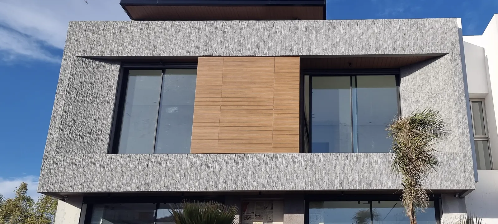

Tout ce qu'il faut savoir sur Le Celestone : la matière, la pose, l'extérieur, la finition et le devis.
Le Celestone est l'habillage mural décoratif de Deutschconfort : une formulation propriétaire — un polymère technique à cœur massif haute densité — pensée pour durer. La matière fait le produit : c'est elle qui autorise l'usage en intérieur comme en extérieur. Découvrez la matière en détail.
Oui. Le matériau est 100 % hydrofuge et formulé avec des additifs anti-UV : il n'absorbe pas l'eau, ne gonfle pas et ne se décolore pas. C'est précisément l'usage façade et terrasse qui le distingue d'un panneau décoratif classique. Voir aussi notre page revêtement de façade extérieur.
Sur béton, enduit ciment, bois ou marbre, directement et sans ossature. La seule condition est que la surface soit plane, saine et sèche.
Oui : il est livré en finition primaire, prêt à peindre dans la couleur de votre choix. Utilisez une peinture acrylique à l'eau pour extérieur, même en usage intérieur, pour une tenue durable. Il peut être repeint plus tard.
Oui. Le cœur est plein et massif, ce qui permet une découpe précise pour les retours d'angle, les finitions et les configurations architecturales complexes.
Nos équipes partenaires, formées par Deutschconfort, posent pour vous. La pose en autonomie reste simple et rapide si vous préférez. Voir le détail de la pose et installation.
Léger à manipuler, ce qui facilite la pose en hauteur, tout en étant résistant aux chocs et indéformable dans le temps.
Le tarif dépend du modèle, de la surface et de la finition choisie. Nous établissons un devis précis et gratuit selon votre projet — demandez-le sur WhatsApp au +212 614 474 221.
Il dépend du modèle et de la quantité, et vous est confirmé au moment du devis.
Au showroom de Casablanca, Boulevard d'Anfa (pas d'envoi postal) : venez toucher la matière et être conseillé. Lun–Ven 10h30–13h / 15h30–19h · Sam 11h–13h. Nous trouver.
Notre équipe vous répond et établit votre devis sur WhatsApp, ou vous accueille au showroom.